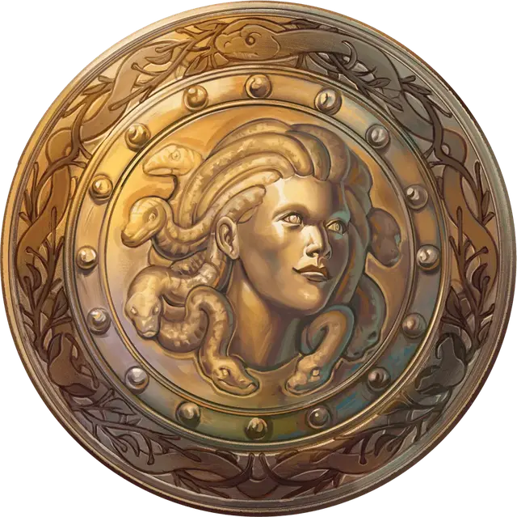

Эгида Эвриаллы
Euryale’s Aegis
Доспех (щит), легендарный (требуется настройка)

Рекомендованная стоимость от 50 001 зм
На этом блестящем латунном щите изображена легендарная медуза-друид Эвриала.
Держа этот щит, вы получаете следующие преимущества:
Благословение Эвриалы. Вы обладаете сопротивлением к урону ядом и иммунитетом к состоянию окаменевший.
Окаменевшая геральдика. Бонусным действием вы можете заставить переднюю часть щита вспыхнуть с помощью окаменевшей магии медузы, причем глаза на рельефе будут ярко светиться. Выберите одно существо, которое вы видите в пределах 30 футов от себя. Существо должно совершить спасбросок Телосложения со Сл 20, иначе оно становиться опутанным начиная превращаться в камень. Опутанное существо должно совершить ещё один спасбросок Телосложения Сл 20 в начале своего следующего хода. При провале существо становится окаменевшим на 24 часа. При успешном спасброске состояние опутанный прекращается. После того, как это бонусное действие будет использовано, его нельзя будет использовать снова до следующего рассвета.
Наложение заклинаний. Держа этот щит, вы можете действием наложить одно из следующих заклинаний: малое восстановление [lesser restoration], поиск существа [locate creature], путешествие через растения [transport via plants]. Как только вы используете щит, чтобы наложить заклинание, оно не может быть наложено с его помощью снова до следующего рассвета.